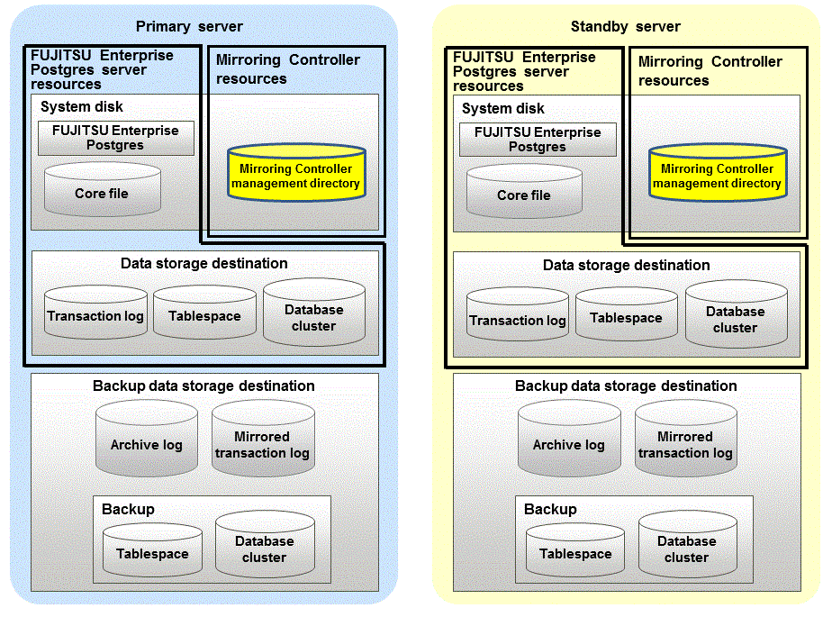

This section describes the database server and arbitration server resources of Mirroring Controller.
The only Mirroring Controller resource is the Mirroring Controller management directory, which stores the files that define the Mirroring Controller behavior, and the temporary files that are created when Mirroring Controller is active.
Note
Do not create the Mirroring Controller management directory in a directory managed by FUJITSU Enterprise Postgres, otherwise it may be deleted by mistake or may cause unexpected problems when FUJITSU Enterprise Postgres recovery is performed (such as old version of files being restored).
Refer to "Preparing Directories for Resource Deployment" in the Installation and Setup Guide for Server for information on the directories managed by FUJITSU Enterprise Postgres.
The backup methods described in "Backing Up the Database" in the Operation Guide cannot be used to back up the Mirroring Controller resources. Therefore, users must obtain their own backup of Mirroring Controller resources, in addition to FUJITSU Enterprise Postgres server resources. Retrieve backups after stopping Mirroring Controller.
If the automatic switch/disconnection is enabled, do not edit synchronous_standby_names for the Mirroring Controller monitoring target instance. Otherwise, if Mirroring Controller is switched after editing, data may be lost or SQL access may stop.
If you are building on a virtual machine or cloud, make sure the virtual machines are on different physical servers. Refer to your virtual machine software and cloud vendor documentation for instructions on how to deploy virtual machines.
The content on the primary server will be backed up. You cannot tell which server is the primary server to be backed up, because switching and failback may be performed between the servers. It is also impossible to tell which server is to be restored using the backed up data. Accordingly, ensure that you create a backup of each server when it is working as the primary server.
Figure 1.6 Configuration when backing up Mirroring Controller resources

The only arbitration server resource is the Mirroring Controller arbitration process management directory. This directory stores the files that define the Mirroring Controller arbitration process behavior and the temporary files created when Mirroring Controller is active.